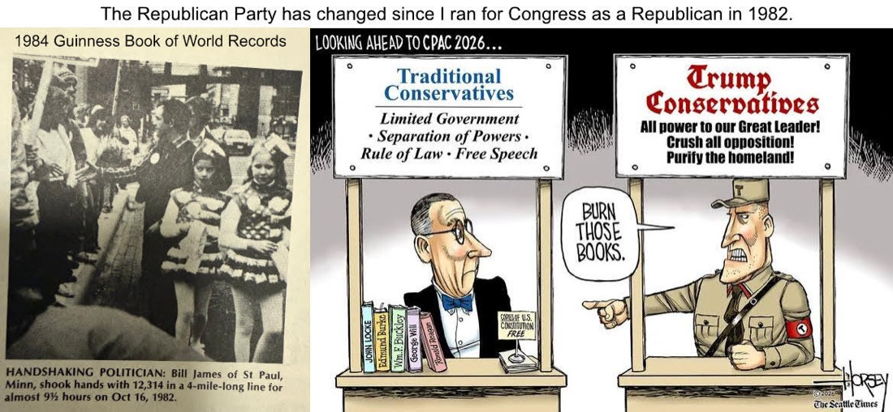

I was a Republican until Republicans went silent about January 6th
My name is Bill James. I am a 1972 West Point graduate and infantry veteran. I was a Republican from the
day I left the Army in 1980. I ran for Congress as a Republican in 1982. My political views are conservative. They
have not changed. The Republican Party has.

1982: running for Congress as a Republican. Traditional conservatives stood for limited government, separation of powers, the rule of law and free speech.
What changed
I know what I saw on January 6th, 2021. So did every Senator and Congressman in the Capitol that day. Some of them
said so at the time. Then they went silent, and they have stayed silent through the pardons, through "I am a
dictator," and through "we shouldn't even have an election."
We elected our Congressmen and Senators to represent us, not a part of us, not a party, and not the President. We
granted them separate powers that they cannot delegate and the President cannot exercise. When they stay silent while
those powers are taken, their silence is a vote.
"The people, by throwing themselves into either scale, will infallibly make it preponderate. If their rights
are invaded by either, they can make use of the other as the instrument of redress."Alexander Hamilton, Federalist #28
Why blue is the conservative vote in 2026
The Constitution's design depends on ambition counteracting ambition. When one party holds the Presidency and both
houses of Congress, and that party will not check its own leader, the check passes to us. Voting blue in 2026 is not
a change in my principles. It is the only way left to hold the silence of Republicans accountable for their repeated
violations of the Constitution, and to put Congress back in a position to do its job.
In the 2026 and 2028 elections, I will do everything I can to hold that silence accountable. In Oklahoma that means
asking Senators Mullin and Lankford, and Congressman Hern of Tulsa, the questions below.
Questions for Senator Mullin
From SilenceBetraysAmerica.com, where
each image has a button to copy it to X, Facebook or Truth Social. Click any image for full size.
The Question of LoyaltySenator Mullin: Why do you support Mr. Trump's selling America's interests out to Russia? The 'Peace Deal' appears to be translated from Russian.
The Question of ViolenceSenator Mullin: Why do you support pardoning rioters and a standing army shooting an American in the face and denying medical care until she bled out? I know what I saw on Jan 6 and Jan 7.
The Question of HypocrisySenator Mullin: Shame on you for not speaking out against this? There is a different standard for law enforcement officers depending on who is attacking them.
The Question of Civil RightsSenator Mullin: Why do you support gangs breaking into an American's home without a warrant and dragging him mostly naked into the winter?The Question of HumanitySenator Mullin: Shame on you for funding this?
The Question of Behavior PatternsSenator Mullin: Why are you hostile to the Rule of Law? 26 women accused him of sexual assault. Maybe we should have believed women from the start!
The Question of MoralitySenator Mullin: Why do you protect pedophiles and sacrifice children? Why did you fight releasing the Epstein files and accept violations of the law that mandates they be released?Taxation without RepresentationSenator Mullin: Why are you violating No Taxation without Representation? Americans pay 96% of these tariffs.
The Question of the EconomySenator Mullin: Why are you destroying the dollar? 2025 was not a good year for the U.S. Dollar. This is destruction of wealth.
Congressman Hern, thumbs up
Kevin Hern represents Oklahoma's 1st District, Tulsa.
ICEA Chicago woman shot five times by Border Patrol, then charged as a "terrorist." Every charge dropped.ICE"I am proud of the continued work to... increase support for ICE."